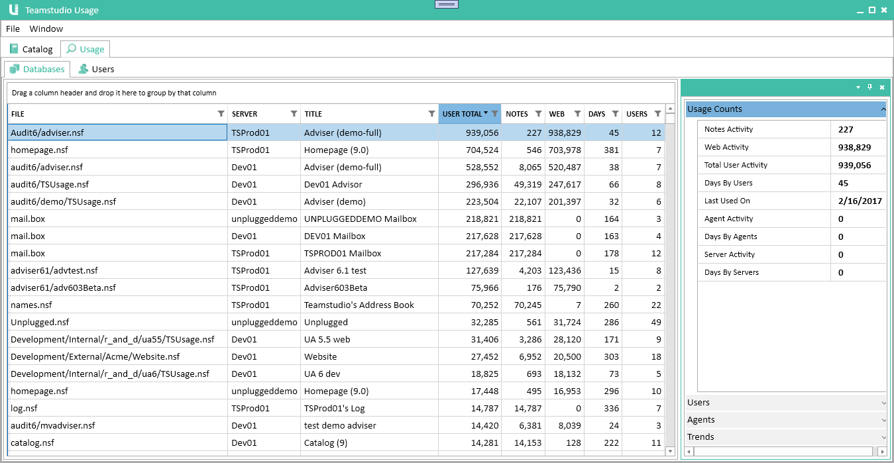
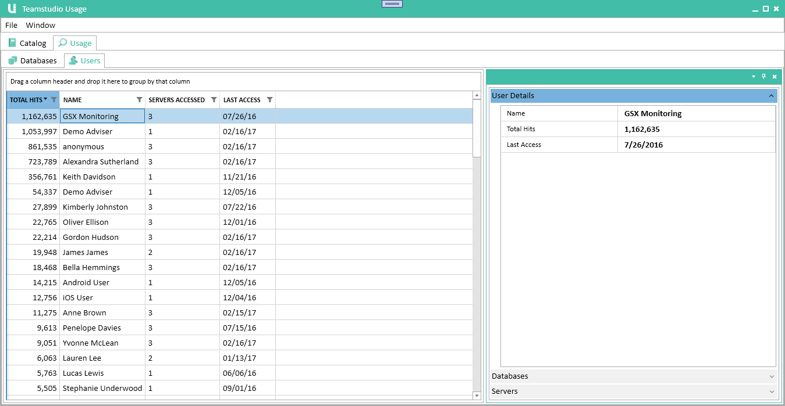

使用状況
Usage モジュールは、Domino のログファイルに保存されている詳細な使用状況の情報を収集します。これにより、データベースがどの程度使用されているか、また誰が使用しているかを確認することができます。Web からの利用とクライアントからの利用を区別し、さらに個々のユーザーによる利用とエージェントやサーバーによる利用も区別して表示します。
サーバースキャンの実行
Domino サーバーは Usage 情報を 14 日間しか保持しないため、データが失われる前に定期的にサーバースキャンを実行してデータを取り込むことが重要です。インストールのセクションでは、Teamstudio Usage が毎晩スキャンを実行するように設定する方法を説明しています。
使用状況の表示
使用状況データを確認するには、Usage ウィンドウにある Usage というタイトルの 2 番目のタブを選択してください。
日付と時刻について
Teamstudio Usage は、すべてのデータを内部的に UTC（協定世界時）で保持しています。使用統計は「日」単位で算出され、この「1日」は UTC の午前 0 時から翌日の午前 0 時までと定義されています。ユーザーインターフェース（UI）上に日付のみが表示されている場合は、すべて UTC 基準の日付を指します。これにより、異なるタイムゾーンにある複数のサーバーからのデータを一貫して処理することが可能です。一方、日時（日付と時刻の両方）についても UTC で保存されますが、UI 上ではお客様のローカルタイムゾーンに変換して表示されます。
データベースの表示
Usage タブを選択した状態で、2段目のタブ列から Databases タブを選択してください。これにより、データベースの使用状況のビューが表示されます。

Catalog と同様に、このビューは 2 つのセクションに分かれています。左側にはカタログ内のすべてのデータベースが、合計使用量の多い順（降順）で表示されます。これには、使用実績のないデータベースも含まれます。このリストのソートや検索方法については、カタログ のページで詳細をご確認ください。右側には詳細ペインが表示され、選択したデータベースの詳しい使用状況を確認できます。
フィルタリング
フィルタリングによって除外されたデータベースは、リストには表示されません。また、すべてのカウント（使用回数など）には、フィルタリングによって非表示に設定されたユーザーによる使用状況は含まれません。
表の列項目
| 列 | 説明 |
|---|---|
| User Total | サーバーやエージェントによる使用を除いた、ユーザーによる合計使用量です。これは、Notes 列と Web 列の数値を合算したものに相当します。 |
| Notes | Notesクライアントからのデータベースセッション数です。1 セッションは、「ユーザーがデータベースを開き、操作を行い、その後閉じるまでの一連の流れ」として定義されます。なお、セッション数は、そのセッション中にどれだけの作業が行われたかを示すものではありません。1 つの文書だけにアクセスした場合でも、数百の文書にアクセスした場合でも、1 回のセッションにつきカウントは「1」だけ増加します。 |
| Web | HTTP 経由でユーザーがデータベースにアクセスした回数です。HTTP には「セッション」という概念がないため、これはデータベースへの個別のアクセス数をカウントしたものです。たとえば、1 つの文書を表示するためにページを開くだけで、データベース内に画像リソースとして保存されているグラフィックを取得するために、数回のデータベースアクセスが発生する場合があります。そのため、この列のカウント値は、Notes 列のカウント値よりも大幅に大きくなる傾向があります。 |
| Days | 少なくとも 1 人のユーザーがそのデータベースにアクセスしたユニークな日数です。ここでも、サーバーやエージェントによるアクセスは除外されます。 |
| Users | データベースにアクセスしたユニークユーザー数です。 |
Usage Counts
詳細ペインの最初のセクションには、メインテーブルと同じカウントが表示されます。これに加えて、エージェントおよびサーバーによる使用量も個別のカウントとして表示されます。
Users
詳細ペインの 2 番目のセクションには、Notes および Web のユーザー使用量の内訳がユーザーごとに表示されます。また、各ユーザーがそのデータベースに最後にアクセスした日付も表示されます。
Agents
Users セクションと同様に、このセクションではどのエージェントがデータベースにアクセスしたか、およびそれぞれのエージェントの使用回数が表示されます。
Trends
最後のセクションには、Notes クライアントからの月間ユーザー使用量の推移がグラフで表示されます。
ユーザーの表示
Usage タブを選択した状態で、2段目のタブ列から Users タブを選択してください。これにより、ユーザーごとの使用状況ビューが表示されます。

この画面も通常どおりの 2 ペイン構成で、左側にユーザーリスト、右側に選択したユーザーの詳細ペインが表示されます。ユーザーリストは、デフォルトで合計使用量の多い順（降順）に並べ替えられています。なお、データベースビューとは異なり、このリストには「少なくとも 1 つのデータベースにアクセスしたことがあるユーザー」のみが表示されます。
表の列項目
| 列 | 説明 |
|---|---|
| Total Hits | このユーザーに対して記録されたデータベースアクセスの総数です。このカウントがどのように算出されるかの詳細については、前述の「データベース」セクションを参照してください。 |
| Servers Accessed | このユーザーがアクセスしたサーバーの総数です。 |
| Last Access | このユーザーのアクティビティが確認された最終日です。 |
User Details
詳細ペインの最初のセクションには、メインテーブル（一覧）に表示されているものと同じカウント（統計値）が表示されます。
Databases
詳細ペインの2番目のセクションには、ユーザーの使用量の内訳がデータベースごとに表示されます。また、各データベースにそのユーザーが最後にアクセスした日付も表示されます。
Servers
詳細ペインの3番目のセクションには、ユーザーの使用量の内訳がサーバーごとに表示されます。
パフォーマンス
アプリケーションの初回起動時や、フィルタ設定を変更した際には、使用状況データの再計算が必要です。データベースフィルタを追加・削除した場合は ユーザー の使用状況を、同様にユーザーフィルタを変更した場合は データベース の使用状況を再計算する必要があります。この処理には多少の時間がかかる場合があるため、Teamstudio Usage はデータの再計算を自動的には行いません。その代わりに、リストの上部に「使用状況が変更された可能性がある」ことを知らせるメッセージが表示されます。メッセージ内には、データを再計算するためのクリック可能なリンクが含まれています。
再計算に数秒以上かかる場合は、処理中であることを示すインジケーターが表示されます。インジケーターが表示されている間も、アプリケーションの他の操作を続けることができ、計算が完了するとインジケーターは消えます。サーバーの規模や使用状況は千差万別であるため、計算時間の目安を示すのは困難です。当社のテストでは、1,000 個のデータベースとほぼ同数のユーザー、約 1 年分のデータを保持する単一サーバーの場合、計算はほぼ一瞬で完了しました。一方、合計約 10,000 個のデータベース、20,000 人のユーザー、4 年分の使用状況データを保持する複数のサーバー群の場合は、約 30 秒かかります。